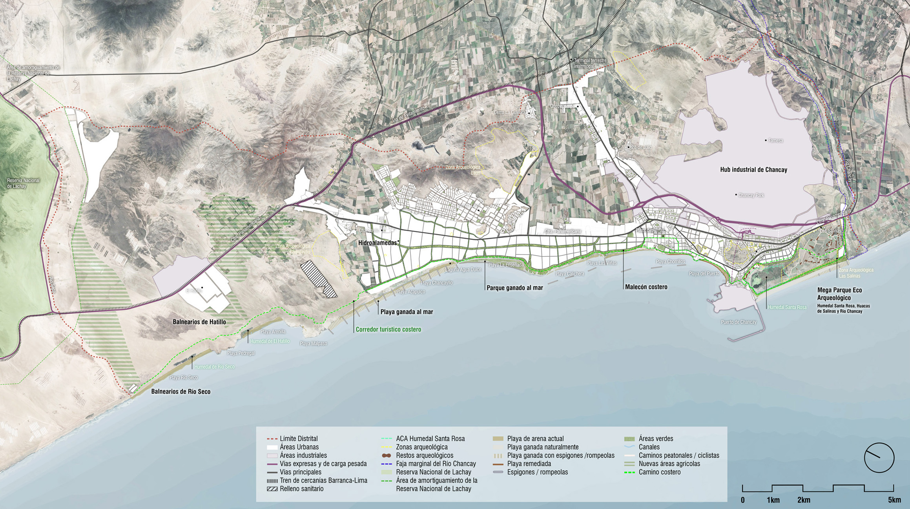
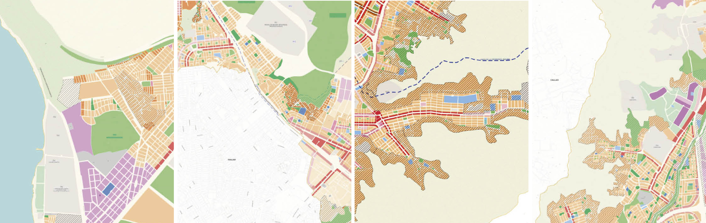
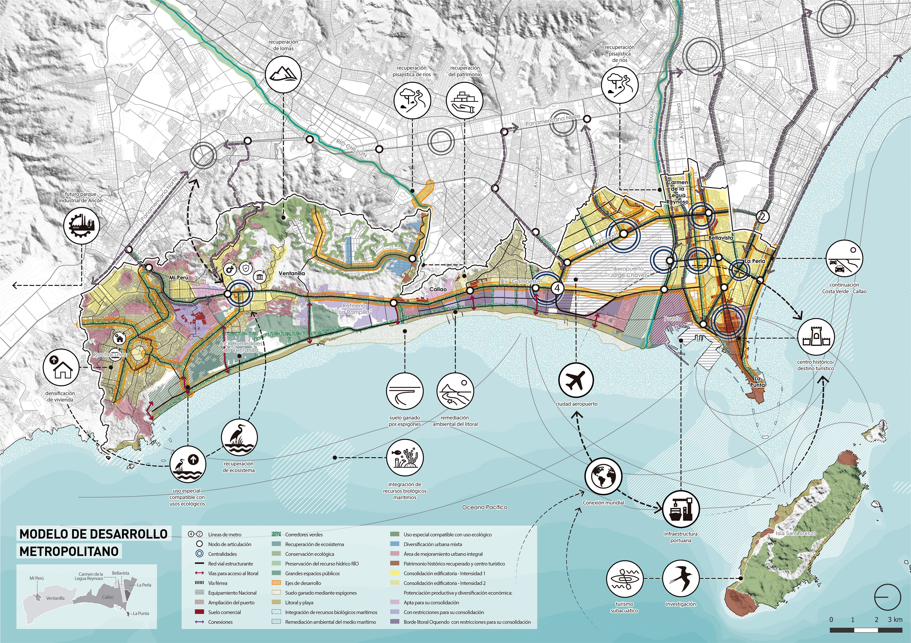
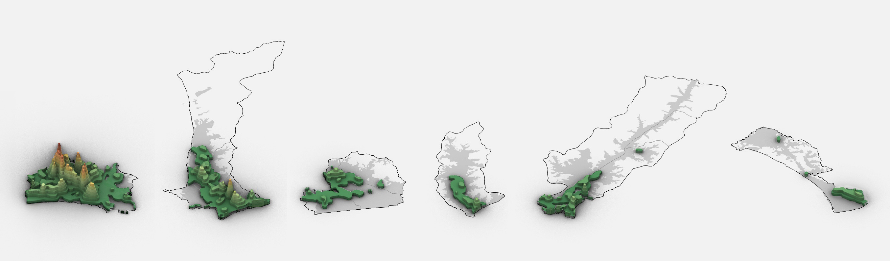
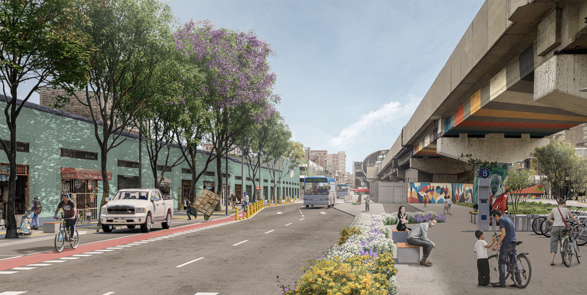
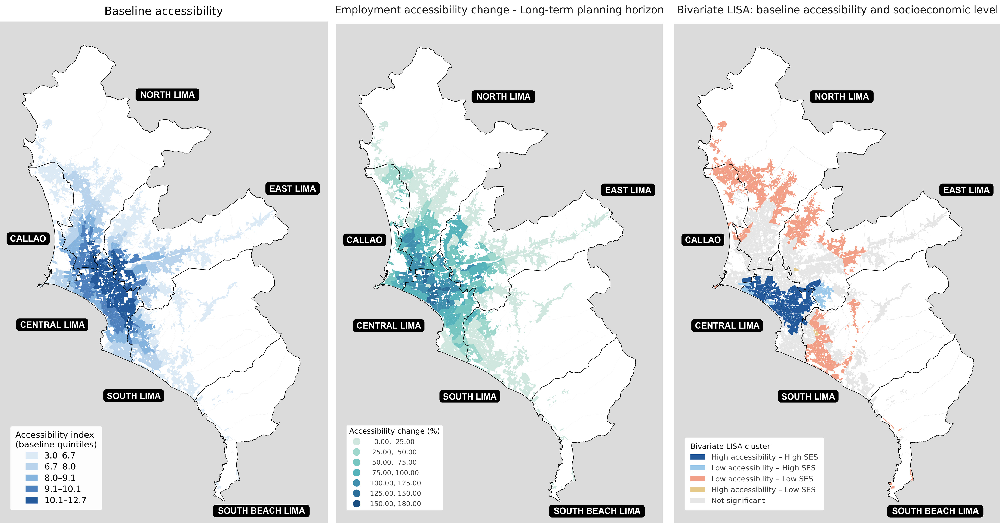
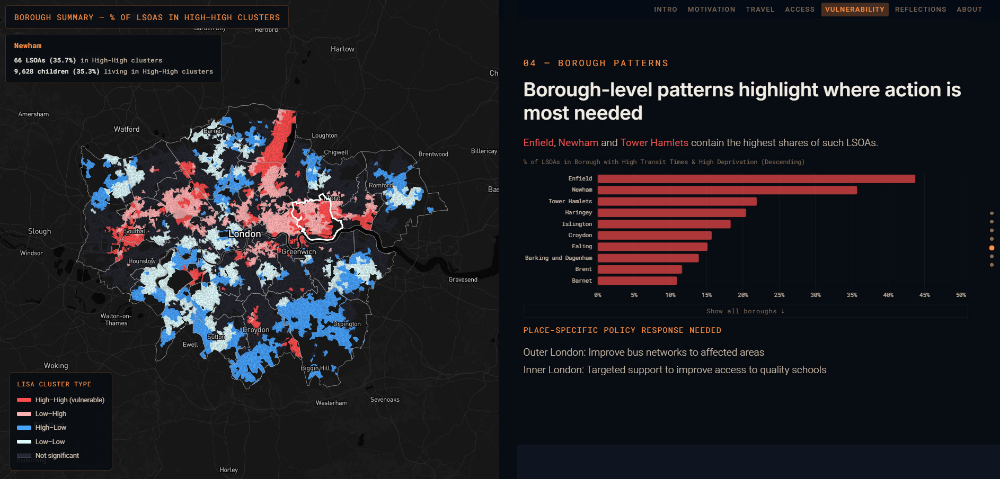
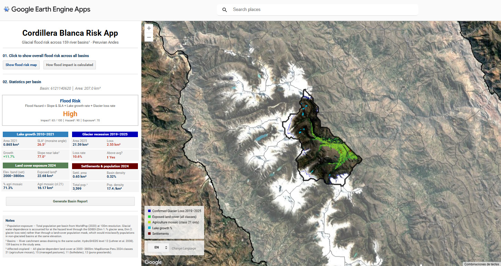
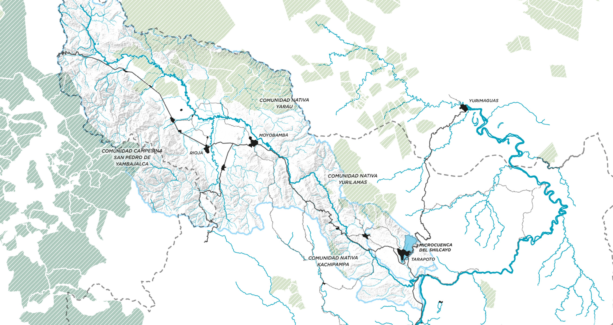
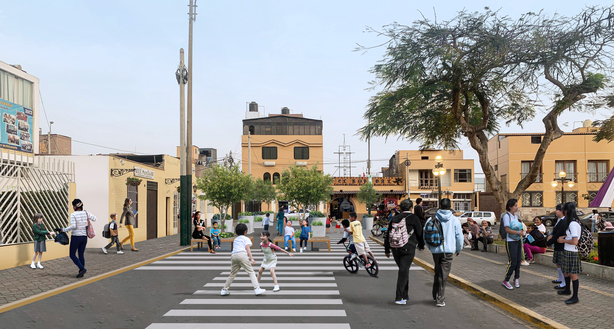

Chancay Urban Development Plan
Planning Chancay's urban growth towards 2034.

Northern Lima Urban Development Plan
Shaping future urban development across Northern Lima.

Callao Metropolitan Development Plan
A long-term spatial strategy for Metropolitan Callao.

Lima–Callao Urban Mobility Plan
Planning a more integrated and sustainable metropolitan transport network.

Lima–Callao Transit-Oriented Development Guide
Guidelines for transit-oriented development around mass-transit stations.

Modelling Accessibility and Equity in Lima and Callao
Exploring how future mass-transit projects could reshape access to employment across Lima and Callao.

Pathways to Progress
Exploring inequalities in access to educational opportunities across London.

Cordillera Blanca Risk Platform
An interactive spatial platform exploring environmental change and climate-related risk in the Peruvian Andes.

Hidroparques Choclino–Shilcayo
Using watershed and spatial analysis to inform landscape interventions along two river corridors in the Peruvian Amazon.

The Urban Factory
Reimagining Lima-Callao's industrial corridor through urban regeneration.

Superblock Surco
Reclaiming street space for people through tactical urbanism in Surco.